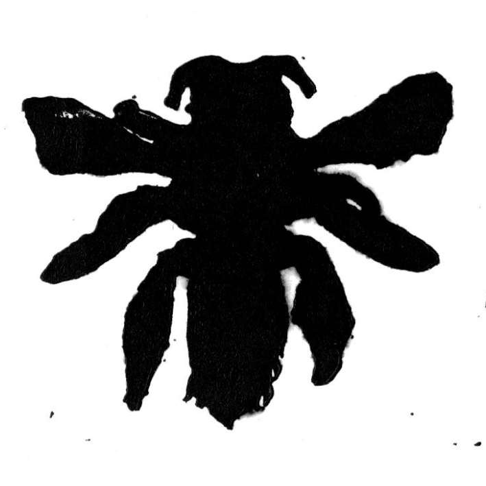
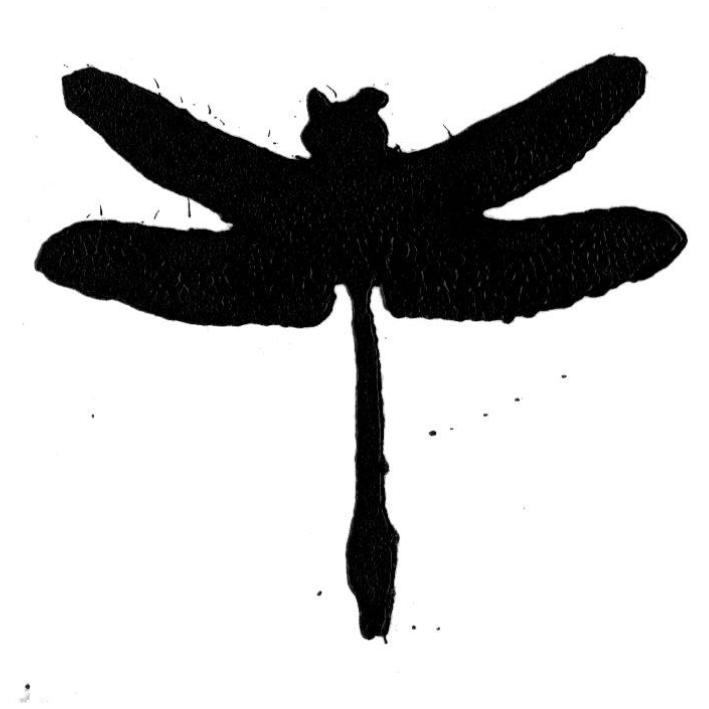
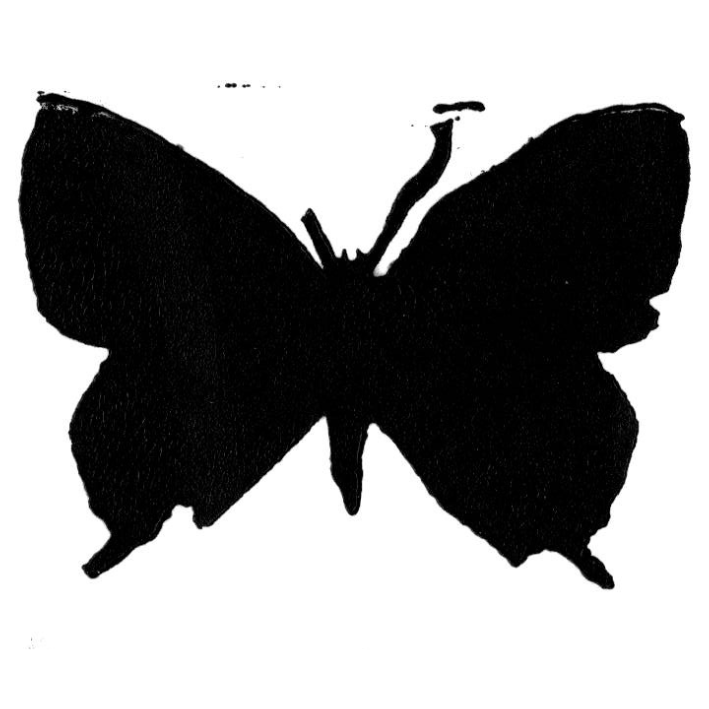

Bogong Moth

Leioproctus Carinatifrons
Adam's Emerald Dragonfly


Desert Blue Butterfly
Arid Bronze Azure
Green Carpenter Bee
Engaging in Recovery: This and other works around the space will contain QR codes, seek them out and scan them. Doing so will reveal images of locations around the space, and by carefully looking in these locations you may be able to find and recover small hidden works depeciting endangered Australian species.
These hidden works are all playing card sized and are paired with another QR code to scan. Doing so will provide information on the species and recover it. Below is a collection of all 6 recoverable species (which will update as you recover them), followed by the artist statement for this work, and finally an image of a location in the space where one of the 6 species is hidden.
Bogong Moth

Leioproctus Carinatifrons
Adam's Emerald Dragonfly


Desert Blue Butterfly
Arid Bronze Azure
Green Carpenter Bee
Recovery encapsulates this series of work with its dual meanings, of the resuscitation of vulnerable species and of the act of finding what was lost, be it pieces of art or scientific data. Through the presence of QR codes, audiences are encouraged to participate in this recovery, making use of intertwined technology and art, while also being exposed to some of the harsh impacts of modern digital infrastructures.
Printing surfaces abstract mining sites and minerals, and QR codes overlay once present wildlife, many moths and other insects now align themselves in rigid unnatural patterns in confused servitude of a digital world. Audiences use (sometimes dysfunctional) technology to play environmentalist, while these same systems are sustained by that which causes ecological harm.
For myself this work comes from a place of both love and disappointment in contemporary digital spaces, harmonises my disciplines of visual art and game design, and allows audiences to interactively critique the costs of certain new technologies, while engaging in an faux ecological recovery.